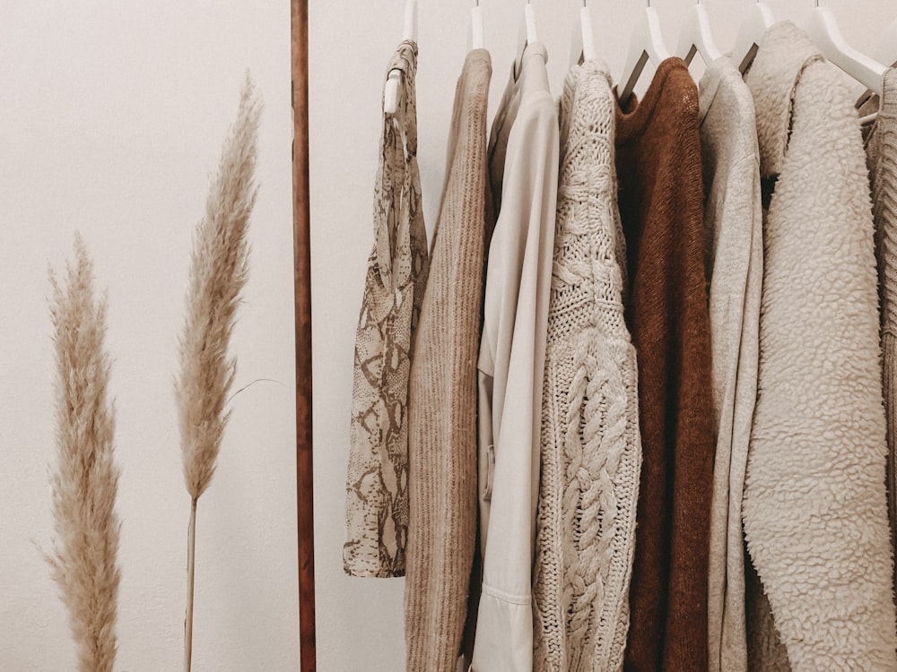

Our Aviation Outerwear Philosophy
In an era dominated by lightweight synthetic puffers and glued vinyl outerwear, AviatorCoatUp champions the rugged, enduring power of natural flight armor. Established in 1994 along Mercer Street in New York, our atelier operates on a foundational premise of biological material superiority, extreme weather defense, and lifetime repairability.
We believe a flight jacket is not merely a seasonal garment, but an armored shelter against the elements. By tailoring 25mm American sheepskin shearling pelts with double-needle horsehide seam welts and military Talon brass zippers, we craft heirloom coats that age with breathtaking character across five decades of winter excursions.


Hand Pelt Grading
Raw sheepskin pelts are hand-selected for uniform 25mm wool curl density, zero fleece voids, and supple grain temper before precision cutting.

Horsehide Welted Seams
Exterior seams are bound with vegetable-tanned steerhide welts, double-stitched with bonded multi-ply thread to eliminate draft infiltration.

Talon No. 10 Brass Zippers
Heavy-gauge military brass zippers with cast sliders and custom throat latches, engineered for gloved operation in freezing cockpit drafts.
The Mercer Street Atelier
Located at 181 Mercer Street, New York, NY 10012, United States, our Manhattan gallery and cutting cleanroom occupies a landmark nineteenth-century brick-and-timber loft. Visitors can witness raw shearling hides being skived, observe heavy walking-foot machines sewing horsehide welt seams, and smell the rich botanical oils and sheepskin wool.
We maintain an open atelier policy for clients with confirmed appointments. Telephone our master cutters directly at +1-888-777-5845 to schedule your bespoke sizing session.